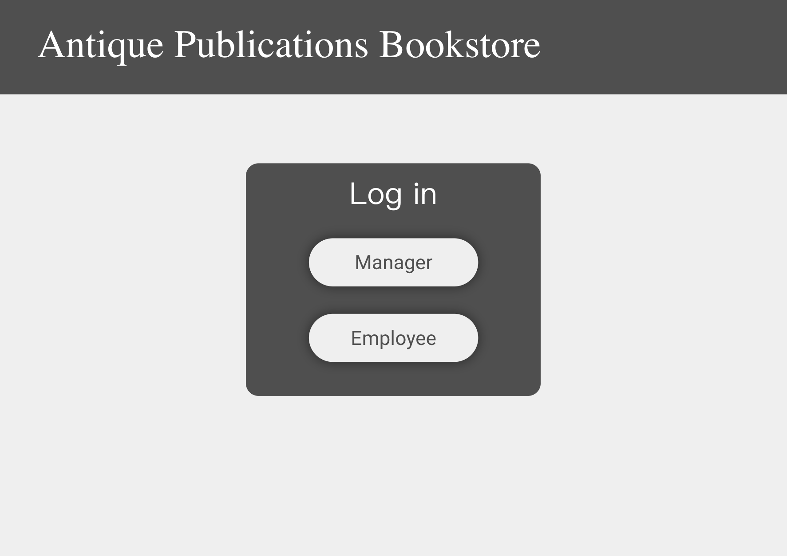
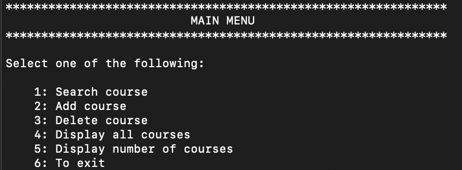

This project is a mockup website for a fictional character called Mr. Finch using an application called MOCKITT, which is similar to Adobe XD. The website is meant to be used to store information about books, authors, customers, orders, and employees so that the information would no longer need to be tracked on pencil and paper and employees can easily track orders. This project was created with a group of three other students in a Software Engineering class.
Gradebook was the final project for a C++ 2 class in order to utilize all the information I had learned throughout the previous computer-science-related classes I had taken. Gradebook is meant to be used to help visualize and visualize a database of courses offered at a College or University. As shown in the image below, Gradebook can be used to search, add, delete, and display courses; however, it can only be used in a computer terminal
